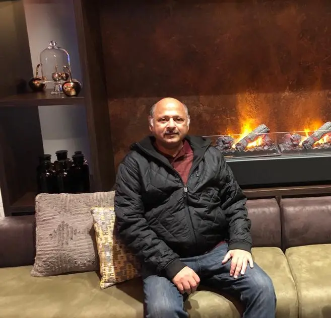

Asif Hossain
Proprietor
From a Dhaka business heritage established in 1948 to Vision Trade International’s formation in 1994, the company has grown through long-term relationships and practical service.
About VTI
Vision Trade International was established in 1994 to extend a trusted local business foundation into international trade, institutional supply and specialist technical solutions.
VTI traces its heritage to Modern Furnishers Ltd., founded in Dhaka in 1948, and the wider Modern Group. That continuity shapes how the company works today: understand the requirement, maintain clear communication, protect the relationship and remain available after delivery.
VTI works with international manufacturers in electronic scoring, shooting-range systems, clay shooting and precision sports equipment. In Bangladesh, the company coordinates commercial and technical discussions, supports procurement and tenders, manages supply, and provides installation, troubleshooting, maintenance and after-sales assistance.
As a DGDP Enlisted Supplier & Contractor, VTI participates in public and institutional procurement environments where documentation, technical compliance and dependable execution are essential.
Continuity
The company’s story is defined by steady expansion from local enterprise to international principal representation and technical support.
The heritage business was established in Dhaka, forming the commercial foundation that later developed into Modern Group.
VTI was formed to expand the group’s local reputation into international trade and specialist institutional supply.
VTI connects international manufacturers with Bangladeshi institutions and supports systems through local coordination, installation and service.
Founding legacy & leadership
From the founding vision behind the 1994 company to today’s commercial and operational leadership, VTI remains a relationship-led business. The roles below are shown exactly as published by the company.

Proprietor
Chief Executive Officer
General Manager
Director, Sales & Marketing
How we work
Purpose
Clear commitments that reflect the work VTI is responsible for every day.
To be a dependable Bangladesh partner for international manufacturers whose systems require informed representation, institutional access and sustained local support.
To connect client requirements with the right specialist technology, coordinate projects responsibly and maintain systems through responsive technical service.
Work with integrity, communicate accurately, protect long-term relationships and recommend solutions that fit the client’s real operational requirement.
Why partners work with VTI
International principals need more than a sales contact. They need a local partner who understands institutions, procurement processes, project sites and long-term technical responsibility.
Local business presence, institutional relationships and familiarity with public procurement requirements.
Experienced technicians for installation, commissioning, troubleshooting and preventive support, with principal escalation when needed.
Structured communication between the manufacturer, VTI, the client and the on-site technical team.